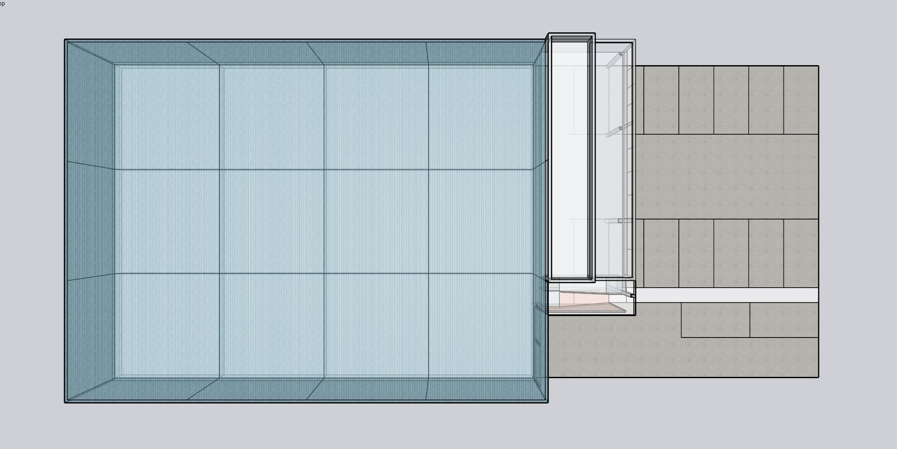
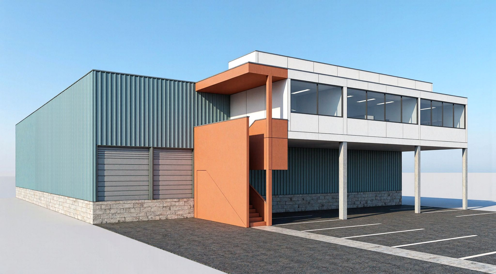
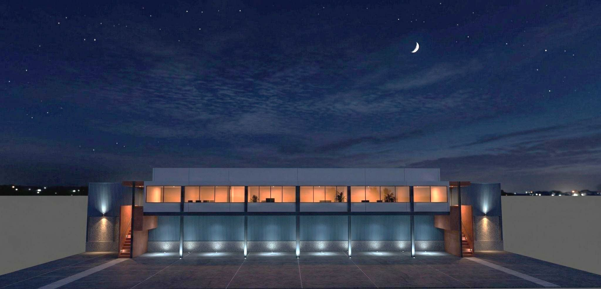

Logistics warehouse and office in Zona Industrial La Primavera, Culiacán. March 2026.

Doors for trailers and vans. Warehouses at the same elevated level for truck access.
Tamayo Aguirre · Propuesta de diseño · Edificios de logística · Zona Industrial La Primavera · Marzo 2026 · Arq. Ivan Tamayo. Two modules (X2). Metal structure, columns every 8.2 m.
Almacén Industrial · La Primavera is a logistics warehouse and office in Zona Industrial La Primavera, Culiacán, Sinaloa.
Each bodega is 25 m × 33 m (825 m²), with an office strip 16.6 m × 6 m (100 m²) and parking 2.8 m × 5.5 m for 18 lugares. Trailer and van doors open at the warehouse; pedestrian access runs under the office. The warehouses sit at the same elevated level for truck access.

